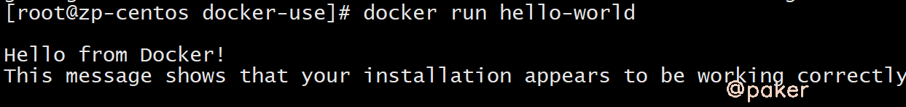
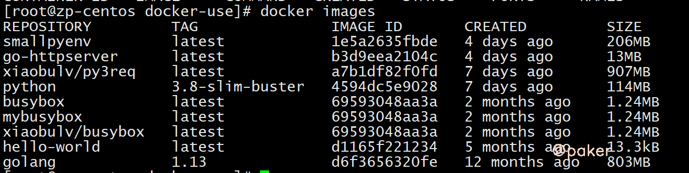
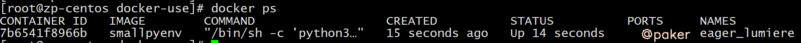
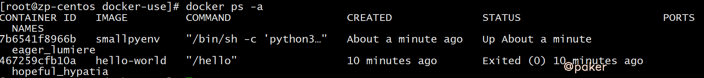
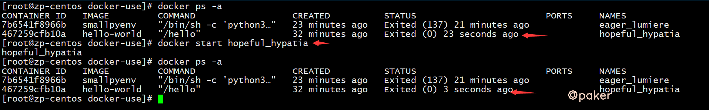
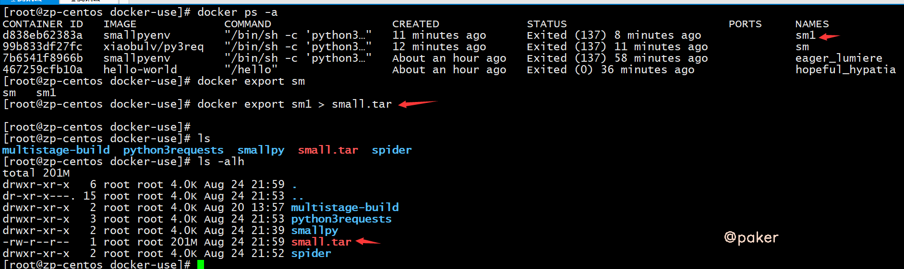
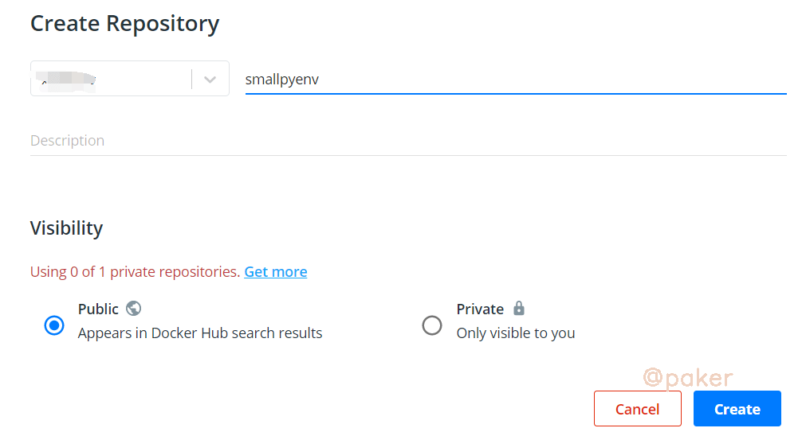

Docker常用命令
整理了Docker常用命令，记不住的方便查找
安装卸载
卸载旧版Docker
较旧的 Docker 版本称为 docker 或 docker-engine 。如果已安装这些程序，请卸载它们以及相关的依赖项。
sudo yum remove docker docker-client docker-client-latest docker-common docker-latest docker-latest-logrotate docker-logrotate docker-engine
安装Docker
首次安装 Docker 之前，需要添加 Docker 安装源
sudo yum-config-manager --add-repo https://download.docker.com/linux/centos/docker-ce.repo
安装最新版本的 Docker
sudo yum install -y docker-ce docker-ce-cli containerd.io
启动docker，类似还有status stop restart
sudo systemctl start docker
国际惯例，hello world
docker run hello-world
运行上述命令，Docker 首先会检查本地是否有hello-world这个镜像，如果发现本地没有这个镜像，Docker 就会去 Docker Hub 官方仓库下载此镜像，然后运行它。最后我们看到该镜像输出 "Hello from Docker!" 并退出。

常用命令
docker版本
docker -v
查看本地镜像
docker images

查看运行中的容器
docker ps

查看所有容器
docker ps -a

删除镜像
docker rmi centos # 根据 REPOSITORY 来删除镜像
docker rmi centos:v1 # 根据 REPOSITORY:TAG 来删除镜像
docker rmi 1e1148e4cc2c # 根据 IMAGE ID 来删除镜像，同时会删除所有该镜像的TAG镜像
docker rmi -f 1e1148e42c # 强制删除
删除容器
docker rm hopeful_hypatia # 根据NAMES来删除容器
docker rm 467259cfb10a # 根据CONTAINER ID来删除镜像
docker rm -f 强制删除
拉取镜像
docker pull busybox
命令格式一般为 docker pull [Registry]/[Repository]/[Image]:[Tag]
- Registry 为注册服务器，Docker 默认会从 docker.io 拉取镜像，如果你有自己的镜像仓库，可以把 Registry 替换为自己的注册服务器。
- Repository 为镜像仓库，通常把一组相关联的镜像归为一个镜像仓库，
library为 Docker 默认的镜像仓库。 - Image 为镜像名称。
- Tag 为镜像的标签，如果你不指定拉取镜像的标签，默认为
latest。
可自行去dockerhub寻找镜像，dockerhub
重命名镜像
docker tag busybox:latest mybusybox:latest
构建镜像
构建镜像主要有两种方式：
- 使用
docker commit命令从运行中的容器提交为镜像； - 使用
docker build命令从 Dockerfile 构建镜像。
方法一
docker run --rm --name=busybox -it busybox sh
另开一个窗口执行
docker commit busybox busybox:hello
此时已经生成了busybox:hello这个新的镜像
方法二，最重要也是最常用的镜像构建方式：Dockerfile
Dockerfile文件这样写
FROM python:3.8-slim-buster
COPY . /root/smallpy/
WORKDIR /root/smallpy/
RUN pip3 install -r requirements.txt && ln -sf /usr/share/zoneinfo/Asia/Shanghai /etc/localtime && echo "Asia/Shanghai" >> /etc/timezone
CMD python3 test.py
我们来逐行看一下
FROM python:3.8-slim-buster #要基于python:3.8-slim-buster这个镜像来构建自定义镜像，slim更轻更小
COPY . /root/smallpy/ #拷贝本地当前文件夹内容 到容器内/root/smallpy/ 目录下
WORKDIR /root/smallpy/ #定容器的一个目录， 容器启动时执行的命令（RUN，CMD等）会在该目录下执行
RUN pip3 install -r requirements.txt #build时，容器内运行 pip3 install -r requirements.txt命令与时区设置
CMD python3 test.py #run时运行python3 test.py命令
执行
docker build -t smallpyenv .
就会生成smallpyenv:latest，这样一个镜像了
Dockerfile正确设置时区
我们从 Docker Hub 拉取的官方操作系统镜像大多数都是 UTC 时间（世界标准时间）。如果你想要在容器中使用中国区标准时间（东八区），请根据使用的操作系统修改相应的时区信息，下面我介绍几种常用操作系统的修改方式：
镜像Ubuntu 和Debian 系统可以向 Dockerfile 中添加以下指令：
RUN ln -sf /usr/share/zoneinfo/Asia/Shanghai /etc/localtime && echo "Asia/Shanghai" >> /etc/timezone
镜像CentOS 系统则向 Dockerfile 中添加以下指令：
RUN ln -sf /usr/share/zoneinfo/Asia/Shanghai /etc/localtime
启动容器
- 使用
docker start命令基于已经创建好的容器直接启动 。 - 使用
docker run命令直接基于镜像新建一个容器并启动，相当于先执行docker create命令从镜像创建容器，然后再执行docker start命令启动容器。
使用start启动

使用run命令
OPTIONS说明：
- -d: 后台运行容器，并返回容器ID
- --name=test1: 为容器指定一个名称
- -p: 指定端口映射，格式为：主机(宿主)端口:容器端口
- -i: 以交互模式运行容器，通常与 -t 同时使用
- -v:持久化，宿主机上的目录挂载到镜像里,冒号前为宿主机目录，必须为绝对路径，冒号后为镜像内挂载的路径
- --rm:容器退出后自动清理删除，方便在临时测试使用
示例：
docker run --name=sm1 -d smallpyenv #设置容器名sm1，并后台运行容器
docker run --name=sm2 --rm -it smallpyenv sh #设置容器名sm2，进入shell运行容器，退出后自动清理删除
停止容器
docker stop sm1 #停止
docker restart sm1 #重启
进入容器
处于运行状态的容器可以通过`docker exec进入容器内部
docker exec -it busybox sh
获取容器的日志
docker logs -f mypyenv
导出容器
我们可以使用docker export CONTAINER命令导出一个容器到文件，不管此时该容器是否处于运行中的状态
docker export sm1 > small.tar

导入容器
通过docker export命令导出的文件，可以使用docker import命令导入，执行完docker import后会变为本地镜像，最后再使用docker run命令启动该镜像，这样我们就实现了容器的迁移
docker import small.tar smallenv:test
使用公共镜像仓库分发和存储镜像
登录dockerhub，dockerhu
创建仓库

在推送镜像仓库前，我们需要使用docker login命令先登录一下镜像服务器，因为只有已经登录的用户才可以推送镜像到仓库。
在本地镜像推送到自定义仓库前，我们需要先把镜像“重命名”一下，才能正确推送到自己创建的镜像仓库中，使用docker tag命令将镜像“重命名”：
docker tag smallpyenv testuser/smallpyenv
镜像“重命名”后使用docker push命令就可以推送镜像到自己创建的仓库中了
docker push testuser/smallpyenv
从镜像仓库拉取镜像
docker pull testuser/smallpyenv
容器编排
Docker Compose
Docker Compose 是 Docker 官方的单机多容器管理系统，它本质是一个 Python 脚本，它通过解析用户编写的 yaml 文件，调用 Docker API 实现动态的创建和管理多个容器
安装 Docker Compose
curl -O "https://github.com/docker/compose/releases/download/1.29.2/docker-compose-$(uname -s)-$(uname -m)"
chmod -R 777 docker-compose-Linux-x86_64
mv docker-compose-Linux-x86_64 /usr/local/bin/docker-compose
docker-compose --version
编写 Docker Compose 模板文件
编写docker-compose.yml
version: '3' services: spider: image: smallpyenv
启动&停止
docker-compose up -d
docker-compose stop